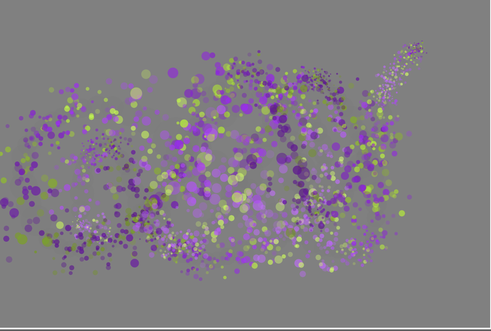
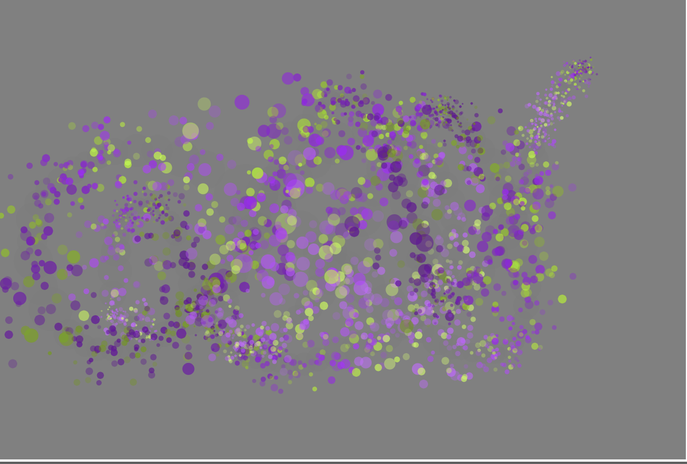

Project 2: Brushes
This project comes from an assignment that I had to complete for CS 396: Generative Methods taught by Kate Compton, who gave us some template code to begin with. In this assignment, I had to create four brushes and an eraser. Each brush had to be unique, and one is a discrete brush, the other is a continuous brush (which uses bezier curves), another makes use of emojis, and the last brush is a continuous brush making curve as you continue drawing
Click Here to Play with the Eraser and Brushes
 

This is my first swarm, and it uses boid effects to display the birds in a flock. This flock of particles is also mouse controlled. When creating this swarm, I wanted the flock of bird to feel as if they were actually moving, so I used the random function in Javascript when coding this.
This is my second swarm, and it is mouse controlled as well. I wanted to make a type of disco ball that fell apart with time. As you move your mouse, the disco ball moves with it and falls apart quickly, with pieces flying arund the screen after 10 seconds.
This is my third swarm, and this one kind of represents wind forces acting on the particles. And the particles in this case are shaped like paper airplanes to make it more believable.
I wanted my fourth swarm to be really chaotic, so I made the particles leave a colorful trail as they traveled. To add to the choas, I coded the particles to look like clouds and put monkey on each particle, so it looked like monkeys flying in the sky.